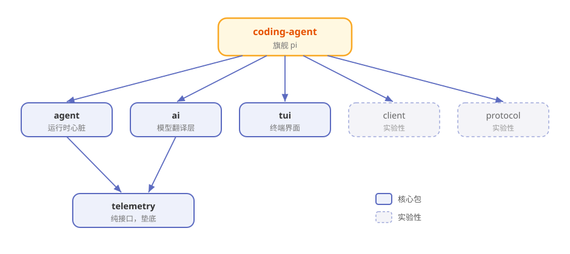

第3章 俯瞰地图：Pi 的 10 个包¶
阅读提示 本章带你站在高处看一眼 Pi 的全貌：它由哪 10 个包组成、谁是核心、数据怎么流。读完你手里就有了一张全书共用的地图。约 9 分钟。
打开引擎盖，先看零件清单¶
第 2 章你把 Pi 开起来了。但你可能注意到，装的是一个叫 pi-coding-agent 的东西，而仓库里却躺着十个文件夹。
这就像你买了一台车，打开引擎盖发现里面不是一整块铁，而是一堆各司其职的零件。Pi 的仓库（earendil-works/pi）就是一个 monorepo——一个大仓库里装着多个独立的 npm 包。
先别急着拆开，我们把零件清单过一遍。
十个包，一人一句话¶
表3-1 Pi 的 10 个包
| 包 | npm 名 | 一句话职责 |
|---|---|---|
| coding-agent | pi-coding-agent |
旗舰产品：你在终端里敲的 pi 就是它 |
| agent | pi-agent-core |
运行时心脏：agent 循环、工具执行、状态管理 |
| ai | pi-ai |
统一 30+ 家大模型的"翻译层" |
| tui | pi-tui |
终端界面库：Pi 的屏幕就是它画的 |
| telemetry | pi-telemetry |
遥测"合同"：只定义接口，不绑定后端 |
| session-backends | pi-session-backend-sqlite-node |
会话持久化的 SQLite 后端 |
| protocol | pi-protocol |
实验性二进制通信协议 |
| client | pi-client |
实验性远程会话客户端 |
| server | pi-server |
实验性会话服务器 |
| evals | pi-evals |
行为评测框架（开发用，不进产品） |
十个看着多，但其实分四档：
表3-2 按重要性分档
| 档位 | 包 | 说明 |
|---|---|---|
| 🏛️ 核心四件套 | coding-agent、agent、ai、tui | 撑起 Pi 的主干 |
| 🔌 可选外设 | telemetry、session-backends | 默认不装也能跑 |
| 🧪 实验支线 | protocol、client、server | 官方标注 unstable，随时会变 |
| 🛠️ 开发侧 | evals | 只用来评测，不进产品链路 |
本书前 12 章主要围绕核心四件套展开，实验支线只在第 11 章点到为止。
它们怎么咬合：依赖关系¶
零件不是散装的，它们有明确的"谁用谁"关系。图3-1 画出了主干：

图3-1 Pi 的包依赖地图（箭头 = 依赖）
读图三个要点：
- coding-agent 站在最顶上——它是旗舰，调用了几乎所有底层包。
- agent 和 ai 是中层骨干——agent 管"怎么干活"，ai 管"跟谁说上话"。
- telemetry 垫在最底——它是纯接口，谁想用遥测就实现它，不想用就当它不存在。
一次对话，数据怎么流¶
把图3-1 动起来，就是你在终端里敲一句话后，数据走过的路：
表3-3 一次交互的数据流
| 步骤 | 发生在哪 | 干什么 |
|---|---|---|
| 1 | coding-agent | 你敲下回车，交互模式接住输入 |
| 2 | agent | Agent 循环把输入打包，准备调模型 |
| 3 | ai | 把请求翻译成所选模型能懂的"方言"，发出去 |
| 4 | 云端模型 | 模型流式地一个字一个字往回吐 |
| 5 | ai → agent | 事件原路返回，agent 决定要不要调工具 |
| 6 | 工具执行 | read/write/edit/bash 动手，结果回填 |
| 7 | 两路输出 | ① tui 把过程画到终端 ② 会话写入 JSONL 日志 |
这条路就是全书的"主干道"。第 5 章会把它放慢成一帧一帧的慢动作，第 6 章单讲工具那一段，第 7 章单讲日志那一段。
为什么拆成这么多包¶
你可能会想：干嘛不写成一坨？Pi 拆包的理由，跟它"最小核心"的哲学一脉相承：
- 想用哪个装哪个——你只想调模型，装
pi-ai就够，不用背上整个 agent。 - 核心不背重依赖——比如 SQLite 是原生依赖，Pi 把它单独放进 session-backends，这样 agent-core 就不用强制带上它。
- 实验的不连累稳定的——protocol/client/server 还在变，单独成包，改它们不影响主干。
阅读提示 这种"把可选的东西拆出去"的手法，是 Pi 全仓库反复出现的设计母题。后面讲扩展机制时你还会再见到它。
🧪 本章实验¶
实验 3-1 ★｜数一数零件 目标：对照清单认一遍包。 步骤：打开 pi 仓库的 packages 目录，数一数有几个文件夹。 验收：数出 10 个（session-backends 里还套着子包）。
实验 3-2 ★★｜只装翻译层 目标：体会"想用哪个装哪个"。 步骤：找一个空目录，只运行
npm install @earendil-works/pi-ai。 验收：装成功了，而且没有把整个 Pi 装进来——你刚刚只买了"翻译器"。
🤔 思考题¶
- ★ 为什么 Pi 要把"实验性"的三个包单独拆开，而不是直接放进核心？
- ★★ session-backends 用 SQLite，为什么要单独成包而不是写进 agent-core？
- ★★ 如果让你给 Pi 再加一个包，你会加什么？它该放在哪一档？
📝 小结¶
- Pi 是 monorepo——一个仓库装 10 个 npm 包
- 核心四件套——coding-agent（旗舰）、agent（运行时）、ai（模型翻译层）、tui（终端界面）
- 依赖分层清晰——coding-agent 在上，agent/ai 居中，telemetry 垫底
- 一次对话走一条主干道——输入→循环→模型→工具→屏幕+日志
- 拆包 = 最小核心哲学的延续——可选的都拆出去，核心保持干净
地图有了。下一章，走进中层骨干之一——那个让 Pi 会说 30 种"模型方言"的翻译层。➡️ 第4章 30 家大模型的普通话：pi-ai 统一层